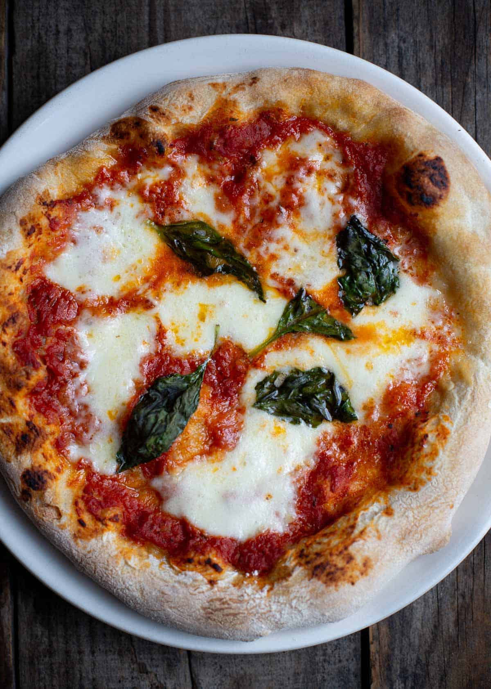

Margherita

The classic style of pizza from Naples, is a 10 to 12-inch round pizza with a crust that is both crispy and chewy. It has a distinct crust that is slightly risen than the base with leopard spots on the crust and base from the high heat
Ingredients
- A good pizza dough with a 66% hydration level (that’s water ratio to flour)
- Fresh and simple tomato based pizza sauce. A classic sauce is simply tomatoes and salt. We use a pizza sauce made in the blender and ready to go. You can use a canned or jarred sauce if easier. The secret to a good pizza sauce is less liquid. It should be thick.
- Mozzarella cheese, ideally in liquid, lightly pressed of the excess water. You can use the small balls, or break up the larger logs or balls into smaller pieces. If you use low moisture shredded mozzarella it will burn as you cook it at high heat. So we strongly suggest fresh mozzarella packed in water (unless you’re adapting this to the kitchen oven at a lower temperature).
- Extra Virgin Olive Oil
- Fresh Basil
Preparation of Margherita pizza
Outdoor Pizza Oven– See below if using your kitchen oven and a pizza stone.
- Pre-warm the pizza oven so the pizza stone is 700 degrees Fahrenheit measured using a good instant read IR thermometer.
- Lightly flour a wooden pizza peel. (Metal pizza peels can be too warm and make it difficult to slide off onto the stone)
- Place the dough ball on the center of the pizza peel. With your fingers, gently press the dough in the center and slowly press and work your way outward to stretch the dough into a 10 or 11-inch width. Use your fingers to then pinch around the edge so you have a slightly larger edge than the center. We do not recommend using a rolling pin as that will cause the air pockets that make great texture from forming
- Gently slap the center of the dough, this removes excess bubbles. DO NOT USE A FORK to press out bubbles on this style of pizza.
- Lift the edges of the dough and dust with more flour so it’s easy to slide on the peel.
- Add the ingredients and prepare to cook.
How to make a Margherita Pizza
- With the dough rolled out and still on the pizza peel, add the tomato sauce with a large spoon. You want a light coating. See recipe card for details.
- Add the mozzarella cheese and then the fresh basil.
- Place the pizza in the pizza oven with the stone at 700 degrees. Using a small pizza peel, slowly rotate the pizza every 10 – 15 seconds to allow for an even cook. After the pizza has rotated fully, the edges should have raised, and the cheese should be slightly bubbling. You can lift the pizza and see if the bottom of the crust has the right leopard style spots.
- Remove the pizza, and then top with a light amount of olive oil and then some finishing salt. Slice and serve.